Recognized dental leadership
Dr. Suh’s biography lists Wake Living’s “Top Dentist” recognition every year since 2012. The International Association of Physiologic Aesthetics lists him on its board of directors.
Supremia Dentistry · Wake Forest, North Carolina
Supremia Dentistry offers general, cosmetic, restorative and emergency dental care in Wake Forest. Tell our dentists what you need, and we can help you plan your next visit.
Visit our Wake Forest officeWhy patients choose us
Experienced people, community ties, and technology support the care we offer in Wake Forest.
Dr. Suh’s biography lists Wake Living’s “Top Dentist” recognition every year since 2012. The International Association of Physiologic Aesthetics lists him on its board of directors.
The practice shares its work with Operation Sweet Tooth and its care for the African Children’s Choir. See our community work.
Digital imaging, bite assessment, restorative tools, and comfort options help the team plan individual treatment. Explore our technology.
Individual examples
Explore three patient before-and-after examples. Individual results vary.
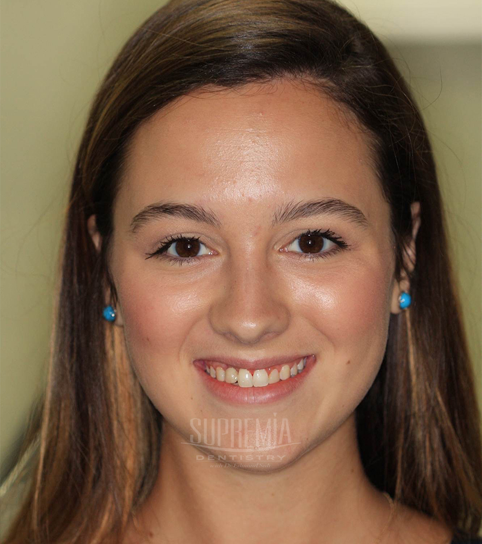
Before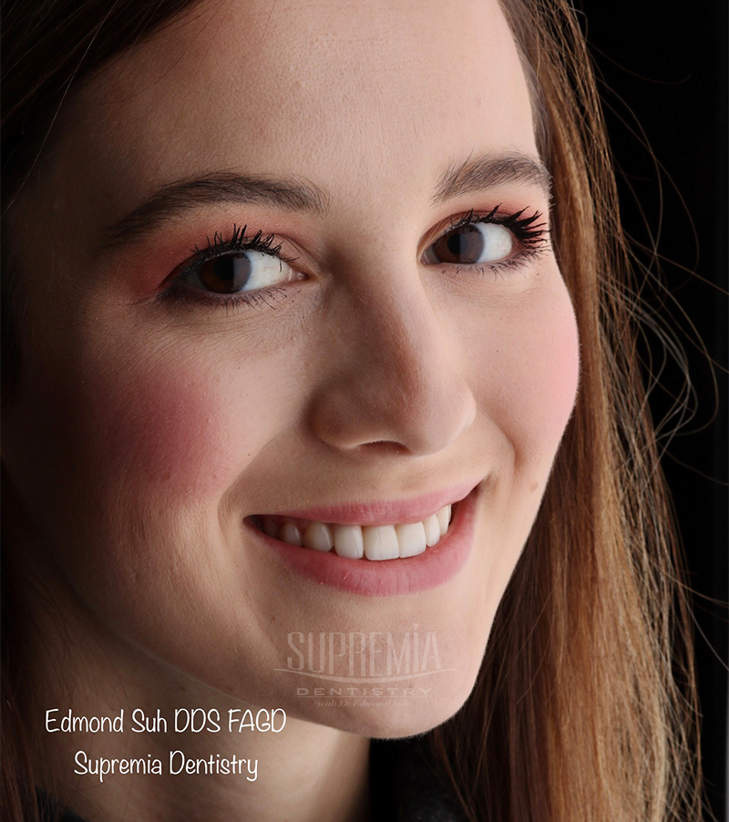
After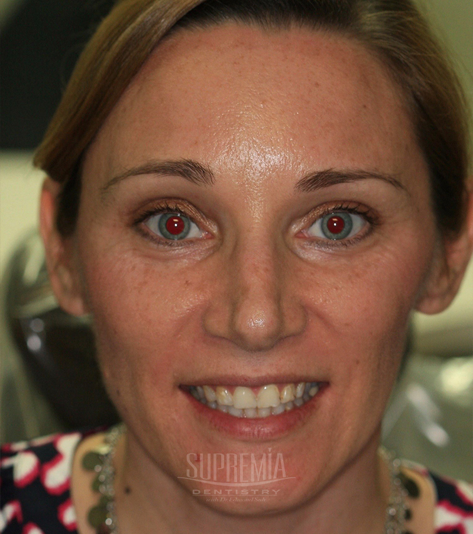
Before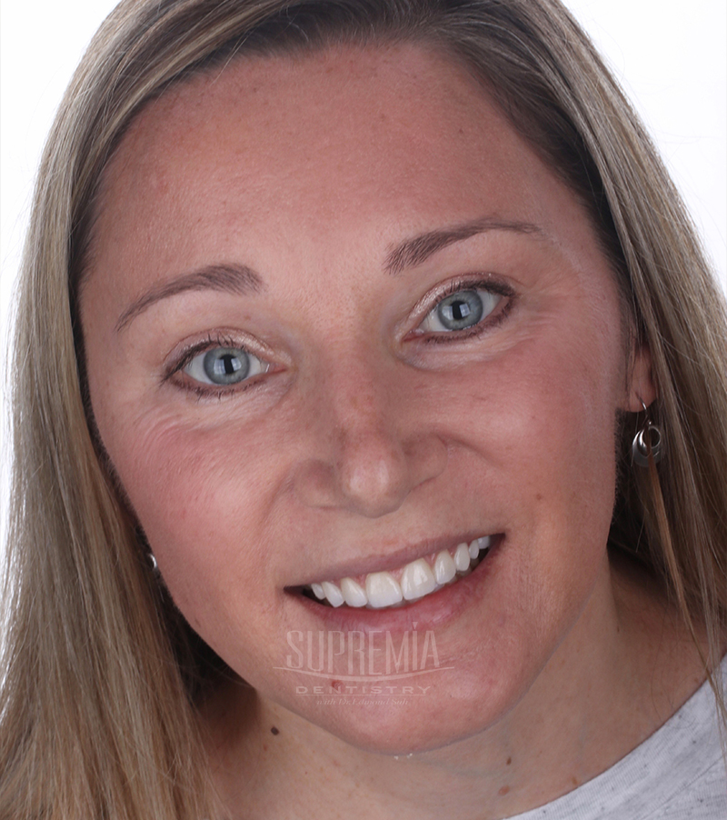
After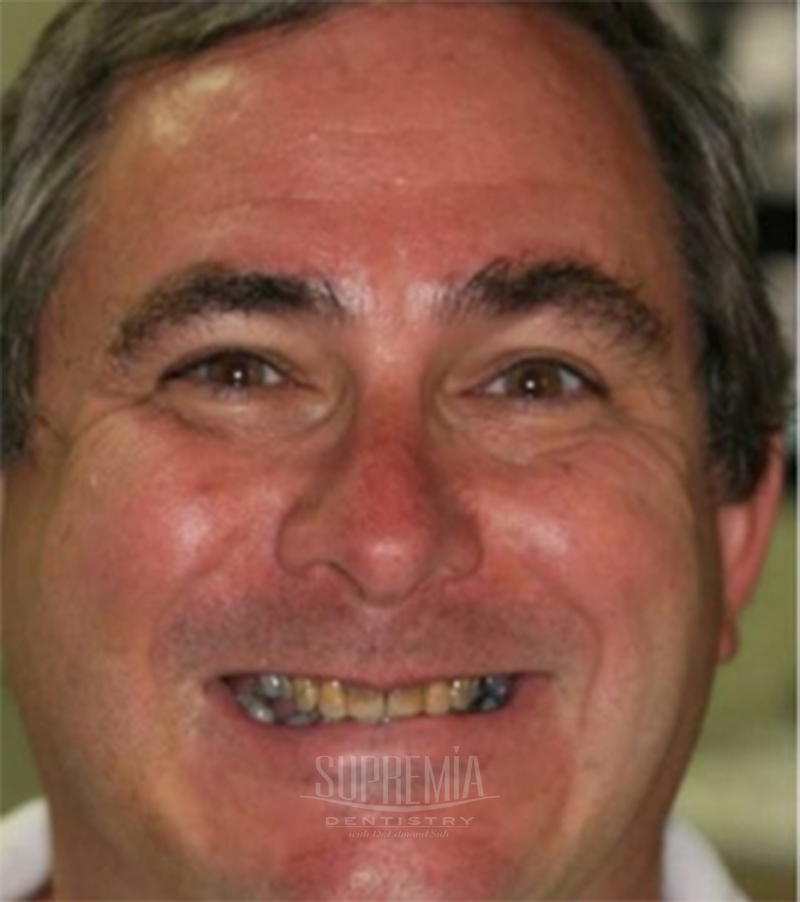
Before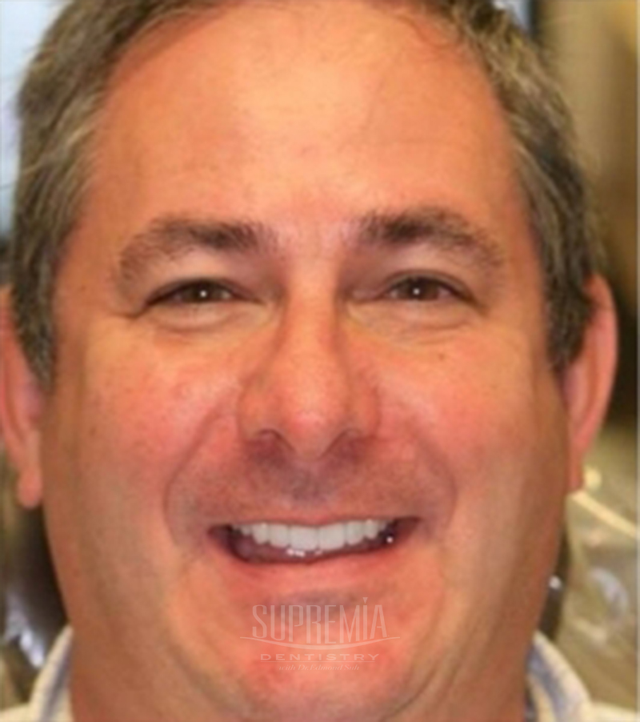
AfterFind the care you need
Start with the reason for your visit. Our dentists can help you discuss what fits your oral health and goals.
Keep up with exams, preventive care and everyday dental needs.
Explore general careTalk about changes to visible tooth color, shape or appearance.
Explore veneer optionsExplore a replacement plan for missing teeth and restored function.
Explore implantsGet help evaluating tooth pain, injury or another urgent concern.
Explore urgent careDiscuss jaw-joint symptoms and the next step in evaluating them.
Explore TMJ careAsk about options that may help you feel more comfortable during care.
Explore sedationPeople behind your care
Get to know the dentists who will listen to your concerns and help you consider your options.
Dentist
Dr. Suh discusses general and cosmetic dentistry and TMJ-related care.
Meet Dr. SuhDentist
Dr. Herman provides comprehensive care with a focus on airway and sleep health.
Meet Dr. HermanOur office and technology
Dr. Suh and the team use diagnostic, treatment, cosmetic, and comfort tools according to each patient’s needs. Ask which tools are relevant to your care.
Dr. Suh and the team continue training in dental techniques and care.
Patient perspectives
Listen to Jamie and Brandon share their experiences with Supremia Dentistry.
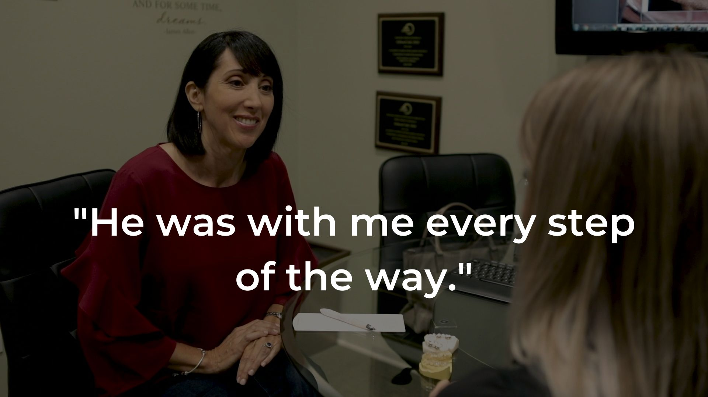
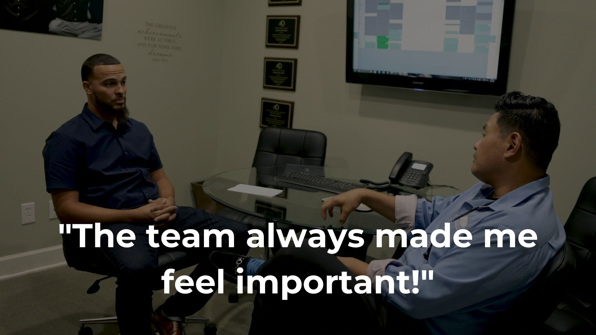
Beyond the office
Through Operation Sweet Tooth, the practice invites children to trade Halloween candy for a chance to thank service members. Supremia Dentistry also describes providing dental care for the African Children’s Choir.
See our community work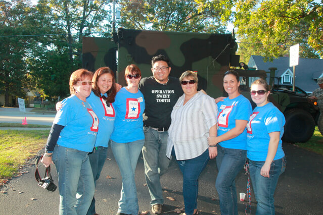
Recognition
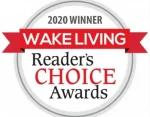
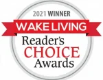
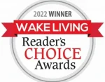
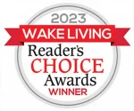
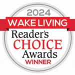
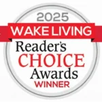
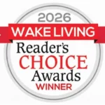
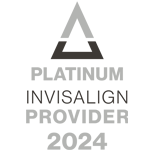
Getting started
Tell us what brings you in. A dentist can review your concerns, examine your oral health and discuss available next steps.
Explore patient informationPlan the practical details
Supremia Dentistry offers Cherry, CareCredit and LendingClub as financing resources. Review the options and ask our team about your proposed treatment estimate.
Financing approval and terms depend on the provider and your application.
Visit us in Wake Forest
1704 South Main Street, Suite 110
Wake Forest, NC 27587
Office hours
Monday–Thursday · 7:00 AM–3:00 PM
Friday–Sunday · Closed
Good to know
Request an appointment online or call (919) 556-6200. Tell our team what brings you in.
Supremia Dentistry is at 1704 South Main Street, Suite 110, Wake Forest, NC 27587. Get directions.
Our services include general, cosmetic, implant, emergency, TMJ and sedation dentistry. Browse all services or tell us about your concern.
Supremia Dentistry offers Cherry, CareCredit and LendingClub as financing resources. Approval and terms depend on the provider and your application. Review financing options.
Yes. Tell our team about your concerns. A dentist can discuss sedation options that may be appropriate for your care.
Call our Wake Forest office about tooth pain or another urgent concern. A dentist can evaluate your symptoms and discuss next steps. Explore emergency dentistry.
Ready when you are
Tell us what you need. Request a visit or call our Wake Forest office.